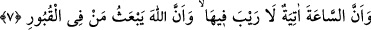

merhalelerde yaratılması, farklı merhalelerden geçirilmesi ve öldükten sonra yeryüzüne
yeniden hayat verilmesi Allah Teâlâ’nın hakkın tâ kendisi olmasındandır. “O, ölüleri
diriltir;” yâni O’nun işi ve âdeti ölüleri diriltmektir. Hâsılı Allah Teâlâ ilk olarak ve
tekrar ölülere hayat vermeye kadirdir. Yoksa nutfeye ve ölü bir halde olan yeryüzüne
defalarca hayat veremezdi. “yine O, her şeye hakkıyla kadirdir.” Kudreti çok fazladır.
Aksi halde bu varlıkları meydana getiremezdi.
7. Kıyâmet vakti de gelecektir; bunda şüphe yoktur. Ve Allah kabirlerdeki
kimseleri diriltip kaldıracaktır.
İyi ve kötü davrananların karşılığının verilmesi için “Kıyâmet vakti de gelecektir;
bunda şüphe yoktur.” Çünkü onun delili açığa çıkmış ve durumu belli olmuştur “Ve
Allah” geri dönmesi olmayan vaadi gereğince “kabirlerdeki kimseleri diriltip
kaldıracaktır.” “el-Ba’s” aslî parçalarını bir araya getirerek ve tekrar ruhlarını vererek
Allah’ın kabirlerden ölüleri diriltmesidir. Filozoflar, yok olanın geri döndürülmesinin
imkânsız olduğunu ileri sürerek bunu inkâr etmiştir. Bizim görüşümüz şöyledir: Allah,
insanın ömrünün başından sonuna kadar kalıcı olan aslî parçalarını bir araya getirir ve
ruhunu ona geri döndürür. Bunun ‘yok olanın geri döndürülmesi’ diye isimlendirilip
isimlendirilmemesi fark etmez. İnsanın (yeryüzü tarafından) yenilip eritilen parçaları
ise yiyerek artan kısımlarıdır ve aslî değildir.
Rivâyete göre gökyüzü menîye benzeyen bir yağmur yağdırır ve âhiretteki yaratılış
ondan meydana gelir. Nitekim dünyadaki yaratılış, hayat denizinden babaların
sulblerine, oradan da anaların rahimlerine inen nutfeden hâsıl olur. Böylece hayat
katresinden bu nutfe rahimde cesed hâline gelir. Biliyoruz ki Allah ilk yaratılışı daha
önceden bir misal olmadan yaratmış ve dilediği sûrette terkib etmiştir. Âhiretteki
yaratılış da böyledir. Hak Teâlâ onu da hissedilebilir olmakla birlikte daha önceden bir
misal olmadan yaratır. Allah tekrar yaratmayı bu dünyadaki yaratmadan geriye kalan
“acbü’z-zeneb”den yapar. “Acbü’z-zeneb” dünyadaki yaratılışın aslıdır. Âhiretteki
yaratılış da ona dayanır.
Sonra Allah yeryüzünü ve ölüleri sûrî su ile dirilttiği gibi kasvetli/katı kalbleri de
mânevî su ile diriltir. Mânevî su ise zikirler ve hidâyetin nurlarıdır. Akıllı kimse,
şüphelerin ve gizli olsun açık olsun şirkin karanlıklarından kurtulmak için tâatlerin ve
zikirlerin nurlarıyla kalbi nurlandırmaya ve diriltmeye gayret eder. Şüphesiz ruha göre
cesed ölüye göre kabir gibidir. Ölü kabrinde dirilerin duâlarından faydalandığı gibi ruh
da kuvvelerin ve uzuvların yardımıyla hâsıl olan şeylerle yüce makamına terakkî eder.
Allah’tan lütuf ve keremi ile ebedî hayatı niyaz ederiz.